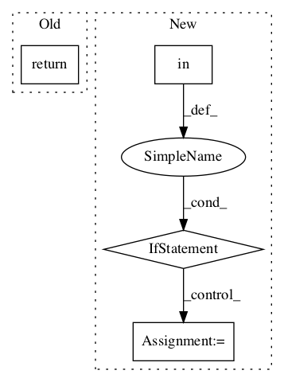

f9b98760f445fc0219cfc9c4cada2b5f9d35ab1b,basic/evaluator.py,F1Evaluation,__add__,#F1Evaluation#Any#,215

Before Change
if "na" in self.id2answer_dict:
new_id2na_dict = dict(list(self.id2answer_dict["na"].items()) + list(other.id2answer_dict["na"].items()))
new_id2answer_dict["na"] = new_id2na_dict
return F1Evaluation(self.data_type, self.global_step, new_idxs, new_yp, new_yp2, new_y, new_correct, new_loss, new_f1s, new_id2answer_dict)
def __repr__(self):
return "{} step {}: accuracy={:.4f}, f1={:.4f}, loss={:.4f}".format(self.data_type, self.global_step, self.acc, self.f1, self.loss)
After Change
new_id2na_dict = dict(list(self.id2answer_dict["na"].items()) + list(other.id2answer_dict["na"].items()))
new_id2answer_dict["na"] = new_id2na_dict
e = F1Evaluation(self.data_type, self.global_step, new_idxs, new_yp, new_yp2, new_y, new_correct, new_loss, new_f1s, new_id2answer_dict)
if "wyp" in self.dict:
new_wyp = self.dict["wyp"] + other.dict["wyp"]
e.dict["wyp"] = new_wyp
return e
def __repr__(self):
return "{} step {}: accuracy={:.4f}, f1={:.4f}, loss={:.4f}".format(self.data_type, self.global_step, self.acc, self.f1, self.loss)
In pattern: SUPERPATTERN
Frequency: 3
Non-data size: 4
Instances
Project Name: wenwei202/iss-rnns
Commit Name: f9b98760f445fc0219cfc9c4cada2b5f9d35ab1b
Time:
Author: null
File Name: basic/evaluator.py
Class Name: F1Evaluation
Method Name: __add__
Project Name: stellargraph/stellargraph
Commit Name: bcf6d0a188ee9ba868c1de01c347f813e3aaa35c
Time:
Author: null
File Name: stellargraph/core/graph_networkx.py
Class Name: NetworkXStellarGraph
Method Name: nodes_of_type
Project Name: deepmind/sonnet
Commit Name: 2faf7acd48088783ab4d8507cc3eb1e74430b3ad
Time:
Author: null
File Name: sonnet/src/reshape.py
Class Name: Reshape
Method Name: __call__